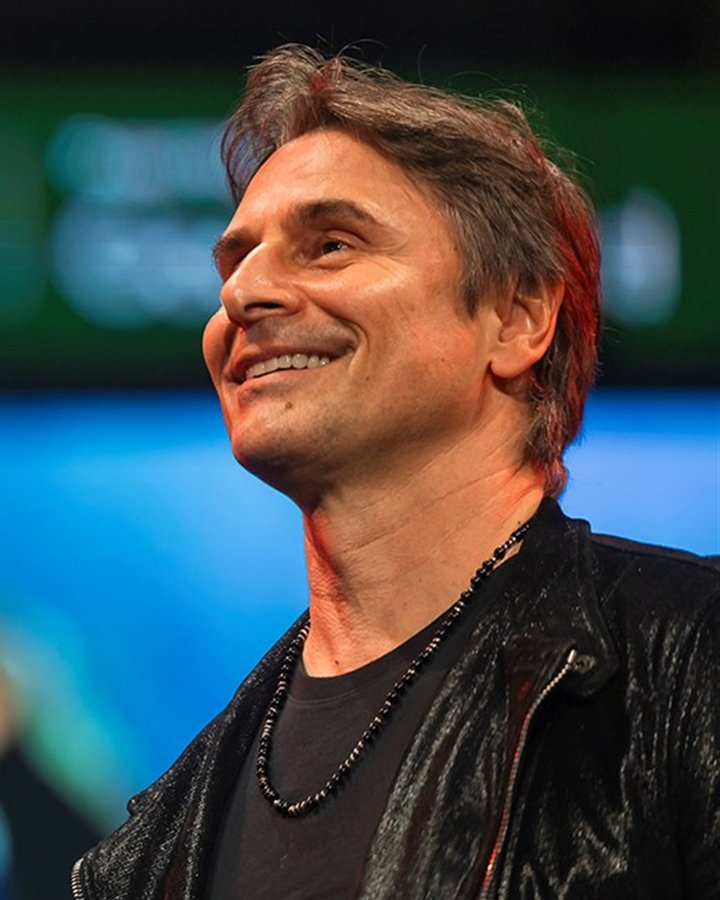
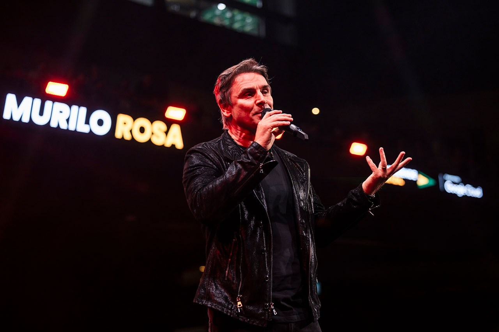
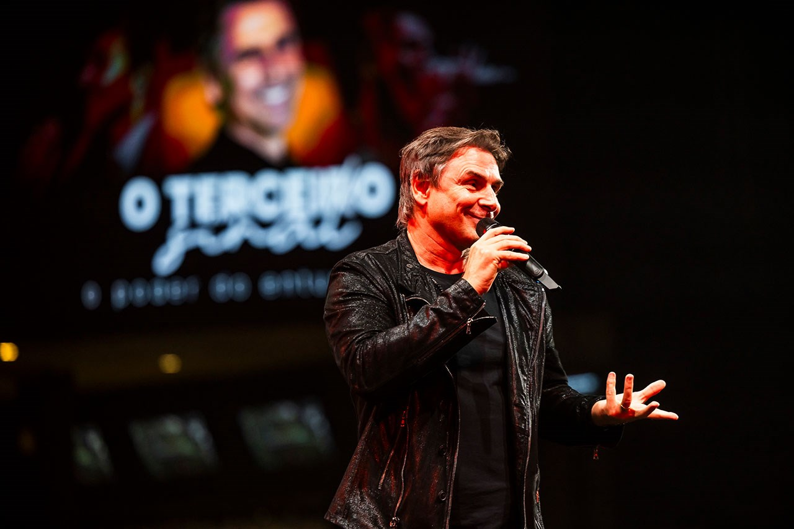
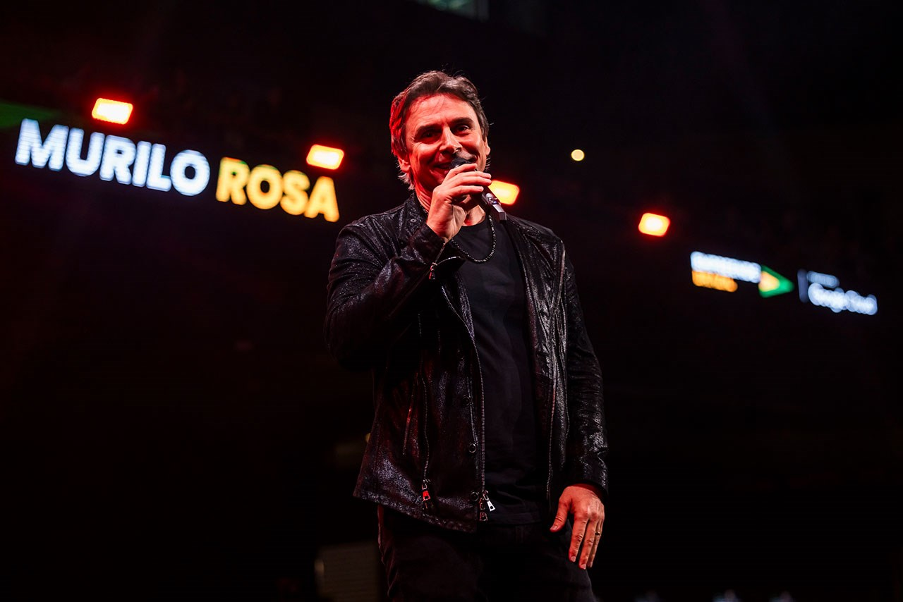
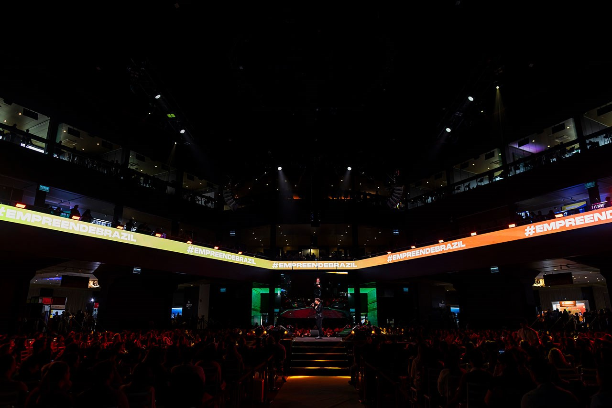
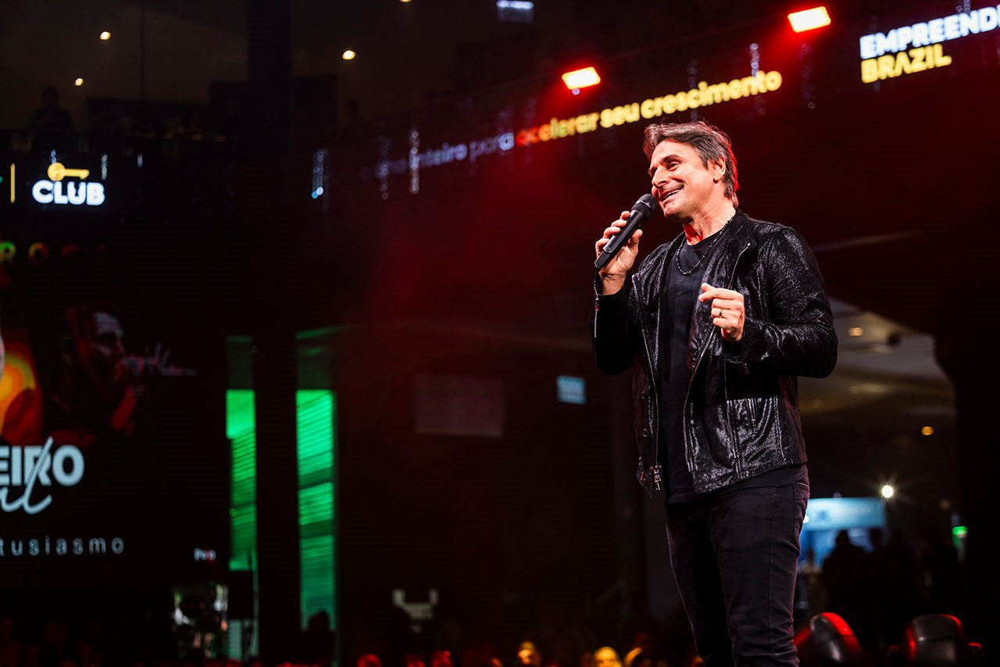

A PALESTRA
Sinta a experiência antes mesmo de subir o pano.
Do primeiro ao terceiro sinal, "O Terceiro Sinal" é reflexão, performance e encantamento em um só palco. Veja Murilo Rosa em ação e imagine a sua plateia vivendo isso.

Palestra-show · o poder do entusiasmo
Um show onde a força do entusiasmo ganha vida. Murilo Rosa une música, poesia e seu lado artístico para inspirar, transformar desafios em oportunidades e mover a sua plateia à ação.
Sem abordagem invasiva. Primeiro entendemos o contexto do seu evento, depois indicamos o melhor formato.

Reality que Murilo apresentou, vencedor do Emmy Internacional de Melhor Programa de Entretenimento Sem Roteiro.
Conte o contexto do seu evento e o objetivo da ação. Nossa equipe retorna com uma proposta consultiva alinhada à sua necessidade.
Seus dados serão utilizados apenas para retorno sobre a sua solicitação.
Sem abordagem invasiva. Primeiro entendemos seu contexto e depois indicamos o formato mais adequado.
"A pessoa entusiasmada é aquela que acredita na sua capacidade de transformar as coisas, de fazer dar certo."
Murilo conecta a própria vivência como artista a ferramentas práticas que reacendem a motivação e ampliam a clareza.
Música, poesia e presença cênica em um verdadeiro show que energiza a plateia e fortalece a atitude.
A plateia sai elevada e pronta para identificar o próprio "terceiro sinal": o instante de coragem que impulsiona a ação.
Do primeiro ao terceiro sinal, "O Terceiro Sinal" é reflexão, performance e encantamento em um só palco. Veja Murilo Rosa em ação e imagine a sua plateia vivendo isso.
Mais do que emocionar, a palestra tem um objetivo claro: despertar o entusiasmo e transformar desafios em oportunidades. Esse é o caminho que Murilo constrói no palco.
"A vida é um palco, e cada dia é uma nova cena para vivermos com paixão e entusiasmo."
Murilo Rosa"O entusiasmo faz toda a diferença entre ficar parado e crescer."
Murilo RosaPresença cênica e emoção abrem espaço para a reflexão encontrar cada pessoa da plateia.
O instante de coragem que impulsiona a ação. Murilo ajuda cada um a identificar o seu.
A plateia retoma foco, iniciativa e confiança, pronta para transformar desafios em oportunidades.

Ator, apresentador, cantor e produtor com 34 anos de carreira, Murilo Rosa é reconhecido por interpretações marcantes entre filmes, séries e peças teatrais. Apresentou o reality A Ponte (2023), vencedor do Emmy Internacional de Melhor Programa de Entretenimento Sem Roteiro. Com carisma e presença cênica, ele une seu lado artístico ao entusiasmo para inspirar plateias em todo o país.
Versatilidade artística e prestígio que elevam a experiência do seu público do começo ao fim.
Com mais de 30 anos de carreira, é um artista consolidado e reconhecido por trabalhos memoráveis.
Apresentou o reality A Ponte (2023), vencedor do Emmy Internacional de Melhor Programa de Entretenimento Sem Roteiro.
Com carisma e presença de palco, Murilo se conecta com o público de maneira autêntica e inspiradora.
Ator, apresentador, cantor, produtor, artista circense e embaixador de Taekwondo em um só palco.
Mais de 2 milhões de seguidores ampliando o alcance e a visibilidade da sua ação.
Reconhecimento nacional, prestígio internacional e alcance que fortalecem a sua marca.
Murilo Rosa também pode ir além do palco e transformar o seu evento em uma experiência completa.
A palestra-show principal: reflexão, performance e encantamento para despertar o entusiasmo como força estratégica. Ideal para empreendedores e equipes que buscam proatividade e engajamento.
Uma palestra especial sobre relacionamentos, que pode contar com a participação da esposa de Murilo, Fernanda, para eventos que querem um olhar mais íntimo e afetivo.
Post, Story e até Collab alcançando mais de 2 milhões de seguidores.
Presença VIP para fotos, imprensa e convidados especiais.
Um pocket show para um encerramento surpreendente do seu evento.
O resultado de "O Terceiro Sinal" é sentido na prática: mais foco, iniciativa e confiança para retomar o protagonismo no dia a dia.
Motivação reacesa e mais clareza para transformar desafios em oportunidades.
Mais proatividade, engajamento e comprometimento nas equipes.
Coragem para reconhecer o próprio "terceiro sinal" e agir no momento certo.








Reconhecido nacionalmente e presente nos maiores palcos e veículos do país.
Os sinais aparecem o tempo todo, só vence quem tem coragem de dizer sim!
Murilo RosaA pessoa entusiasmada é aquela que acredita na sua capacidade de transformar as coisas, de fazer dar certo.
Murilo RosaLeve Murilo Rosa e a palestra-show "O Terceiro Sinal" para o palco da sua empresa. Conte o contexto do seu evento e o resultado que você quer provocar, e nossa equipe retorna com um formato e uma proposta pensados especificamente para isso.

A vida é um palco, e cada dia é uma nova cena para vivermos com paixão e entusiasmo.
Murilo Rosa